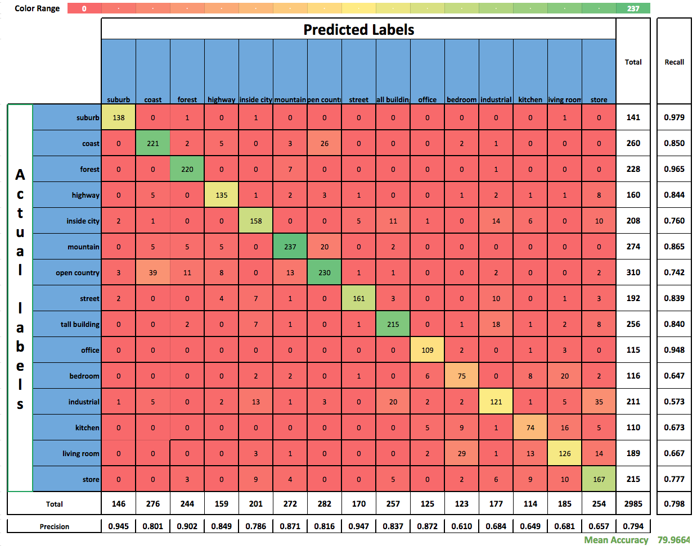

|
Table of contents
|
LLC Implementation and Results
Implementation
We modified the provided the SpatialPyramid code and used the modified code the LLC classification:
- encode_llc.m: soft codeword assignment for features by performing Step 1 through Step 3 in the below image:
- compile_pyramid_llc.m: for generating the pyramid representation from the encoded representation by performing max pooling(c_out = max(c_in1, ..., c_in2)) as opposed to sum pooling
Training and classification is performed using SVM with linear kernel.
Results
Mean Accuracy
We were able to obtain mean accuracy of 79.97 by running our LLC implementation with the K-means generated codebook of size 1024.
Following parameter values were used to obtain these results, which we found to give the best accuracy:
- dictionary size: 1024
- number of nearest neighbors = 5
- pyramid levels = 3
- training images per class = 100
- grid spacing = 8
- patch size = 16
Confusion Matrix
Shown below is the confusion matrix generated by performing classification using LLC implementation:

|